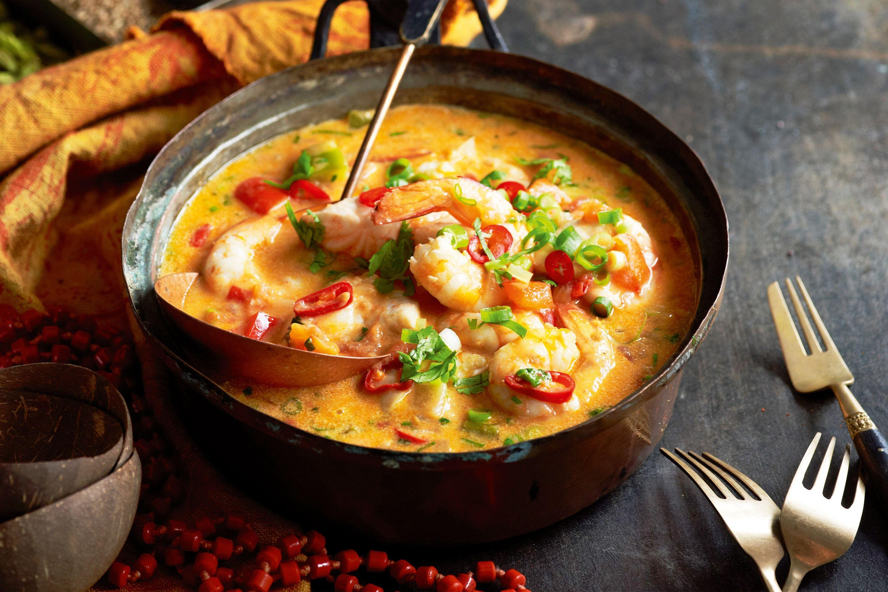

Home page

Preparo
20 MIN
RENDIMENTO
2 PORÇÕES
Moqueca de camarão
INGREDIENTES
1/2 kg de camarão médio
Suco de 1 limão
1/2 xícara de café de azeite de dendê
2 cebolas médias cortadas em rodelas
1/2 xícara de chá de coentro
1/2 xícara de chá de salsinha picada
2 cebolinhas verdes cortadas
3 tomates cortados em rodelas
Sal a gosto
1 vidro de leite de coco
MODO DE PREPARO
Limpar os camarões e temperar com sal e o suco de limão.
Reserve.
Refogue todos os temperos por 15 minutos no azeite-de-dendê.
Acrescente os camarões e cozinhe por 5 minutos com a panela tampada.
Por último, acrescente o leite de coco.
Sirva com arroz branco.